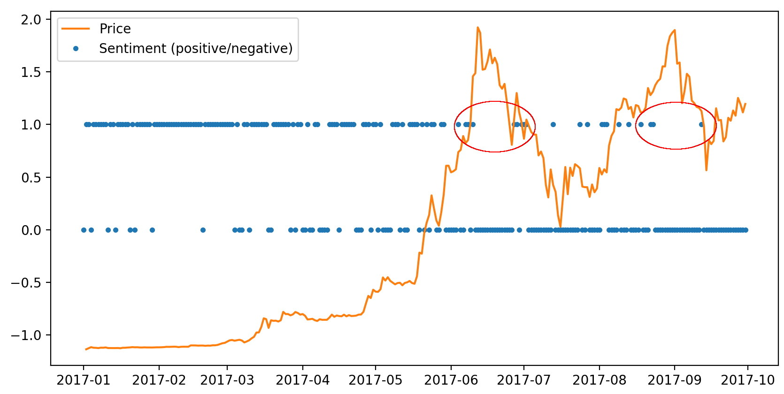

IIC2433 - Minería de Datos
Prof. Belén Saldías
En este proyecto analizamos el impacto de las noticias en el precio del ETH. La finalidad última de este trabajo es generar datos útiles para los traders de criptomonedas.
Usamos dos sets de datos. El primero consiste en publicaciones y comentarios del foro en línea Reddit.com, específicamente del Subreddit de Ethereum. En esta página, usuarios están constantemente hablando sobre la cadena, pidiendo opiniones, compartiendo noticias, e incluso rumores, que a pesar de ser poco fundamentados en ocasiones, aparentan tener una alto impacto en la variación de precio. Los datos se extrajeron de una base de datos almacenada en BigQuery.
En total, el sub-foro cuenta con 50.151 publicaciones y 443.709 comentarios sobre esas publicaciones. Las publicaciones tienen título y cuerpo, los comentarios solo cuerpo. Entre las características que consideramos relevantes están el autor, la fecha de creación y un puntaje calculado por Reddit.com.
El segundo set de datos corresponde al precio de la moneda Ether y fue obtenido utilizando la API de Cryptocompare.com. Este contiene los datos desde el 1 de diciembre de 2015 sobre el precio de apertura, el precio al cerrar, el máximo, el mínimo y el volumen tranzado. Fueron obtenidos los datos tanto por día como por hora, con el fin de probar con distintas granularidades el momento de modelar el problema.
Luego del preprocesamiento obtuvimos un total de 670 datos, correspondientes a los 670 días entre el 1 de diciembre de 2015 y el 30 de septiembre de 2017, con 74 features cada uno. Solo se consideran los datos diarios ya que fueron los usamos finalmente. Estos datos pueden ser pocos para realizar un buen clasificador, pero como se verá más adelante, igual se obtuvieron resultados positivos. Más adelante se hablará de cómo se pretende aumentar este dataset.
Encontramos un patrón interesante al seguir el siguiente procedimiento: Promediamos la polaridad de los comentarios de cada día, normalizamos estos vectores para que queden entre -1 y 1, y transformamos cada valor positivo en un 1 y cada valor negativo en un 0. En el siguiente gráfico se puede ver que hay una relación entre el precio y el sentimiento calculado. En los períodos de gran crecimiento disminuye la ocurrencia de publicaciones positivas, hasta que l precio vuelve a caer.
Dependiendo de la cantidad de días considerados como entrada para el modelo la dimensión del vector de entrada para cada predicción puede llegar a ser mayor a 8000. Para solucionar este problema se utilizaron dos técnicas. En primer lugar, se realizó una selección de features utilizando Random Forest. Tomamos una medida de importancia de scikit-learn llamada feature_importances_6, y descartamos los que tenían una importancia bajo 1e-5. En segundo lugar, se utilizó la técnica Principal Component Analysis (PCA) para generar los features finales.
Probamos nuestro clasificador con tres modelos distintos: K-Nearest Neighbors (KNN), Support Vector Machine (SVM) y Random Forest (RF).